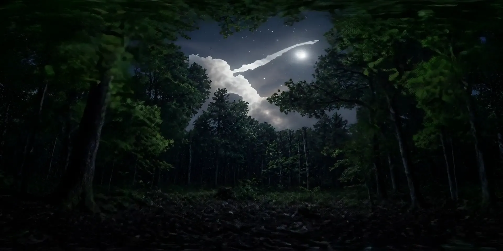
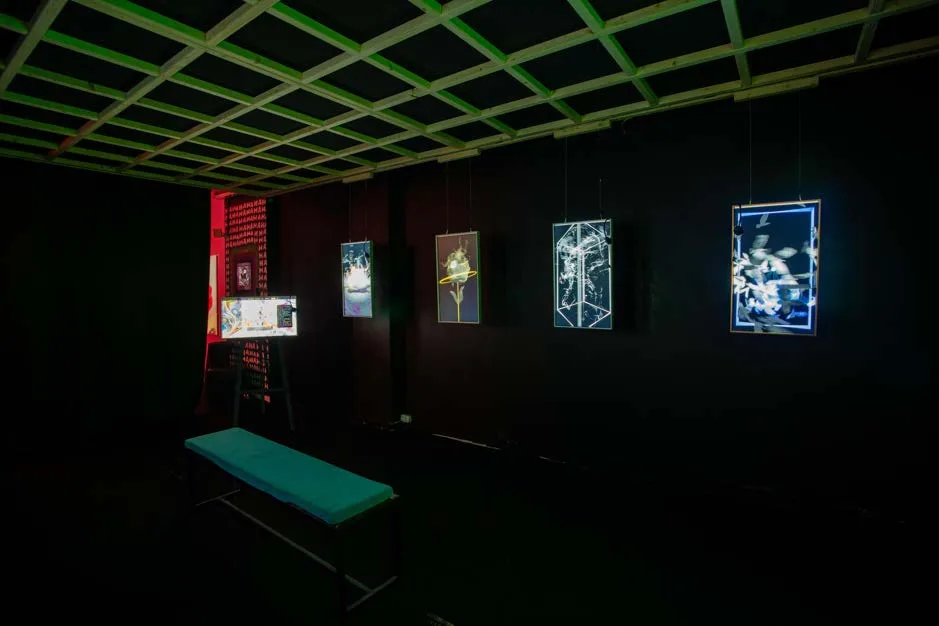

Identity transformation
Become another character, an artistic style or a campaign’s visual world.
Become part of the work. Live transformations, portraits to take home, and immersive worlds that surround you.
A reflection that follows your movement. Become a character, step inside a painting, shape the room, or play inside a visual world.
Bring Magic Mirror to your space ↗Become another character, an artistic style or a campaign’s visual world.
Your movements bring a painting to life.
Touch and movement influence the surrounding visuals.
Steer and interact through your body, as in KBC’s Surf Studio.
With MuLabs, neurofeedback becomes evolving visual forms.
Custom visual styles, artist or brand references, and a frame or projection shaped around your space. Touch controls and the Mirror app let the experience be directed on site.
Plan a Magic Mirror installation ↗Pose, transform, take it home. Guests become part of your campaign’s world and leave with a branded print or a digital portrait.
Bring Magic Photo Booth to your event ↗A simple capture, with no app needed for guests.
A visual style built for your event, brand or characters.
A branded print, a QR code and a digital keepsake.
Campaign-specific prompts, branded booth and interface design, an on-site operator, and print or digital delivery. Available as a standalone booth or alongside Magic Mirror.
Plan a Magic Photo Booth activation ↗Immersive projections, live performance and worlds you can look around.
Drum imagery surrounds the dancers. Android Jones visuals fill the dome. Two recordings from Texas Eclipse bring you into the space, from live performance to projection testing.
Dome projection presented in partnership with Chroma.
Explore Texas Eclipse ↗Footage filmed from inside a drum, projected around the dome alongside the dancers. Move the frame between the projection overhead and the performance below.
Live event recording · 14 seconds · Sound on · Original portrait framing available with Full frame.
Explore worlds made with 204's own 360° pipeline. These sequences are development studies for Sanctuary.

204 original · 360° previzFront · 000° Click the dome to step inside
A gallery, immersive room and creative lab at RnA Studio. Explore the space and its interactive installations.
Explore Sentient Space ↗